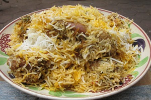
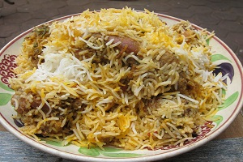

Making a good chicken biryani is just very simple and this recipe is perfect for a home preparation. This is easier than any dum biryani since it needs no sauting of spices or meat. Just mix all the ingredients and cook on a slow dum process, trapping the steam to retain the aroma. To get an authentic flavor and taste, do use all the mentioned ingredients and if desired can substitute ghee for oil.